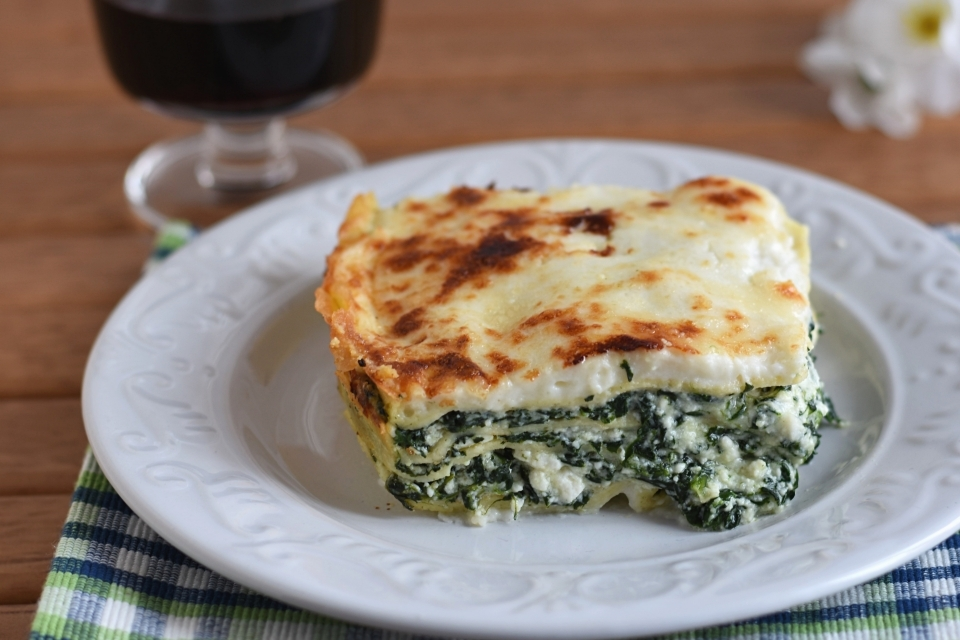

Lasagna with spinach and bechamel cheese

When someone hear of lasagna, the first thought is the more well known lasagna with ragu,
but I personally find this vegetarian version of it to be just as good and that`s why
I decided to propose it as a valid alternative to normal lasagna.
Ingredients:
- 1 package of lasagna sheets
(depending on how big is your baking tray and how many layers you wanna do, you will use between half to a full package)
- 800g of spinach
- 500g of ricotta cheese
- 1000l of bechamel cheese
if you don`t have a baking tray
- a deep enough disposable aluminum foil baking tray
Preparation:
- Start by boiling the spinach
- After the spinach are boiled , drain them and let them rest for around 15-20 minutes
- Mix the spinach with the ricotta cheese
- Start pre heating the oven at 200° C for static oven or 180°C for a ventilated one
- Take your baking tray and put some bechamel cheese at the bottom, try to cover evenly the bottom so that the lasagna won`t stick after it`s cooked
- Put the lasagna sheets in the baking tray vertically trying to fill every possible spot, if you need too you can break in smaller pieces the sheets to fill up the empty spots
- Now put the mix of spinach and ricotta cheese over the lasagna cheese and try to spread it evenly
- Put some bechamel cheese on top of this before starting making a new layer of pasta, if you can at every new layer change the way you put the lasagna sheets alternating layers where you put it vertically with others horizontally
- When you are close to finish the ingredients or the space in the baking tray prepare the final layer by putting the lasagna sheet and then finish off by pouring all the remaining besciamella cheese you have
- Put the baking tray in the oven and let it cook for 40 minutes
- After around 40 minutes the lasagna will be ready, if you want the top more golden you can let it cook another 5-10 minutes depending on your taste
- After removing it from the oven it is ready to be served immediately , but it will be quite hot, or you could let it rest outside the oven for 15-20 minutes before serving it
Enjoy!
After tips
If you aren`t going to finish the whole tray in one session, I suggest you to keep it inside the tray and reheat the whole lasagna when you are going to eat it the next time, this way the top layer will get more crunchy.
Thanks again for browsing the site and checking my recipe!
If you haven`t yet, don`t forget to check my other recipes too!